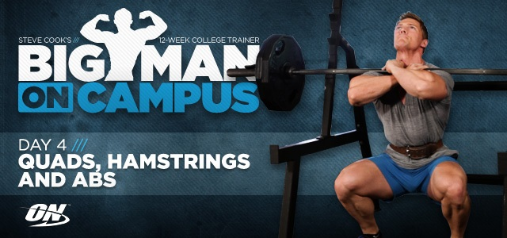

Big Man On Campus: Week 1, Day 4
Steve Cook will teach you to hit your legs harder and heavier than any other body part. Extend, curl, squat and shock your body to grow.
Just like college tests and challenges, leg day will test your resolve and mental strength. If you want teardrop quads and powerful hamstrings, you need to lift with everything you've got. Leg day needs to be trained heavier and harder than any other body part. Extend, curl, squat and shock your body into growth. Leave it all at the gym, Big Man.
Quads/Hamstrings/Abs
Cardio Warm-up : 5 minutes
Exercises
NOTE: Increase weight on each working set of each exercise.
Straight-Legged Deadlifts
1 warm-up set of 8-12 reps, 3 sets of 8-12 reps,
60 seconds rest
Standing Leg Curl
3 sets of 8-12 reps, 60 seconds rest
Seated Leg Curl
5 sets of 12 reps, 30 seconds rest
Front Squats
1 warm-up set of 10-15 reps, 3 sets of 14-16, 10-12, 6-8 reps;
60-90 seconds rest, drop set on final set
Leg Press
3 sets of 10-12 reps, 60 seconds rest
Superset
Leg Extensions
3 sets of 12-15 reps
Jumping Lunges
3 sets of 12-15 reps, 30 seconds rest
Abs: 4 rounds, no rest between sets
Hanging Knee Raise
1 set to failure
Swiss Ball Crunch
1 set to failure
Decline Reverse Crunch
1 set to failure
Broom Stick Twist
25 reps
Alternative Option : Bicycle Crunch